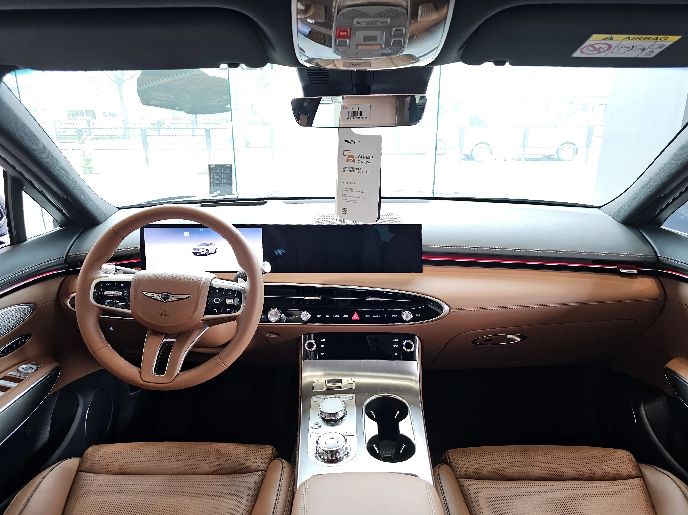

▲ 출고 직후 도장면이 가장 깨끗한 시점에 보호막을 씌우는 것이 신차 관리의 핵심이라는 것이 업계의 설명이다
1. B1불스원카케어, 제네시스 프리빌리지 제공사로 참여
차량 관리 전문업체 B1불스원카케어가 제네시스 멤버십 서비스 '제네시스 프리빌리지'의 '올인원 차량관리 패키지' 제공사로 참여한다고 밝혔다. 제네시스 프리빌리지는 대상 모델을 출고한 고객이 자신의 라이프스타일에 맞춰 다양한 프리미엄 혜택 가운데 하나를 선택해 이용할 수 있는 멤버십 프로그램으로, 호텔 숙박권이나 골프 패키지 등과 함께 차량관리 서비스도 선택지에 포함돼 있다. B1불스원카케어는 이 가운데 차량관리 부문을 맡아, 신차를 출고한 제네시스 고객에게 전문적인 케어 서비스를 제공하게 됐다.

▲ 제네시스 GV80. 신차 출고 직후 도장면 관리는 프리미엄 브랜드 오너들 사이에서 특히 관심이 높은 항목이다 ⓒ Wikimedia Commons
2. 광택·유리막 코팅, 한 번의 방문으로 끝낸다
이번 패키지의 핵심은 '한 번의 매장 방문'이다. 기존에는 광택 작업과 유리막 코팅을 각각 다른 날 여러 차례 방문해 받아야 하는 경우가 많았지만, B1불스원카케어는 이 두 과정을 하나로 묶어 단일 방문으로 마칠 수 있도록 서비스를 구성했다. 광택 처리로 도장면의 미세한 스월마크(광택 잡티)를 제거한 뒤 유리막 코팅으로 보호층을 형성하는 방식으로, 신차의 외장 상태를 오래 유지하는 데 초점을 맞췄다.
📍 신차 출고 초기 관리가 중요한 이유
새 차의 도장면은 출고 직후가 가장 손상이 적고 매끈한 상태다. 시간이 지나면 자외선, 황사, 새똥, 미세 스크래치 등으로 도장면이 서서히 산화·손상되기 시작하는데, 이 시점에 광택과 코팅으로 보호막을 씌우면 손상을 늦추고 원래의 광택을 더 오래 유지할 수 있다는 것이 업계의 설명이다. 또한 신차 하자보증 기간과 향후 중고차 잔존가치 측면에서도, 초기에 외관 상태를 깔끔하게 관리해두는 것이 유리하다는 인식이 확산되고 있다.
3. 전국 260개 매장, 제네시스 부티크·MY GENESIS 앱에서 예약
해당 서비스는 전국 260개 매장에서 사전 예약을 통해 이용할 수 있다. 이용 방법은 제네시스 부티크에서 서비스 제공사로 B1불스원카케어를 선택하거나, MY GENESIS 앱을 통해 신청하는 방식이다. 신차 출고 후 6개월 이내에 제네시스 멤버십 가입과 프리빌리지 신청을 마쳐야 서비스를 이용할 수 있어, 신차 구매 고객이라면 출고 초기에 미리 일정을 챙겨두는 것이 좋다. 제네시스 부티크에서 서비스 상세 내용을 확인할 수 있다. 바로가기
| 항목 | 내용 |
|---|---|
| 제공 프로그램 | 제네시스 프리빌리지 - 올인원 차량관리 패키지 |
| 서비스 내용 | 광택 처리 + 유리막 코팅(단일 방문) |
| 이용 가능 매장 | 전국 260개 매장(사전 예약制) |
| 신청 방법 | 제네시스 부티크 또는 MY GENESIS 앱 |
| 신청 기한 | 신차 출고 후 6개월 이내 멤버십 가입 및 신청 |

▲ 출고 직후 딜러 태그가 그대로 걸려 있는 제네시스 차량 실내. 이 시점이 외장 관리의 최적기로 꼽힌다 ⓒ Wikimedia Commons
4. 제조사 무상관리와는 어떻게 다른가
완성차 제조사들도 통상 출고 후 일정 기간 무상 점검이나 워시 서비스를 제공하지만, 대부분 엔진오일·소모품 교체나 간단한 세차 수준에 머무는 경우가 많다. 반면 이번 B1불스원카케어의 패키지는 도장면 광택 보정과 유리막 코팅이라는, 전문 디테일링 업체의 영역에 가까운 서비스를 제네시스 멤버십 혜택 안으로 끌어들였다는 점에서 차이가 있다. 딜러사 차원의 무상관리가 '정비'에 초점을 맞춘다면, 이번 협업은 '외관 보호'에 특화된 서비스를 프리미엄 브랜드 멤버십과 결합했다는 것이 특징이다.
B1불스원카케어 김옥수 대표이사는 "프리미엄 브랜드 고객에게 걸맞은 전문적이고 체계적인 케어 서비스를 제공하겠다"고 밝혔다. 자동차 관리 용품·서비스 전문기업인 불스원 계열의 노하우가 이번 협업의 바탕이 된 것으로 풀이된다.

▲ 제네시스 G80. 신차 공개 무대에서의 광택만큼이나, 실제 오너가 받는 첫 관리도 브랜드 경험의 일부로 여겨진다 ⓒ Wikimedia Commons
5. 프리미엄 브랜드의 관리 서비스 경쟁
이번 협업은 프리미엄 완성차 브랜드들이 '판매 이후'의 오너 경험을 강화하는 흐름과 맞닿아 있다. 차량 자체의 상품성 경쟁이 치열해진 가운데, 출고 이후의 관리·서비스 품질이 브랜드 충성도와 재구매율에 미치는 영향이 커지고 있기 때문이다. 실제로 소낙스 카케어 등 다른 디테일링 전문업체들도 제네시스 프리빌리지의 차량관리 제공사로 참여하고 있어, 고객이 선호하는 업체를 선택할 수 있는 구조다. 프리미엄 브랜드일수록 이 같은 '선택형 제공사' 구조를 통해 다양한 전문업체의 노하우를 흡수하는 방식이 자리 잡는 모양새다.

▲ 잡티 없는 도장면과 휠은 신차 관리 서비스가 지향하는 상태를 보여준다 ⓒ 제네시스

▲ 제네시스 GV60 마그마. 전시장에서 갓 인도받은 신차일수록 초기 도장면 관리의 효과가 오래 유지된다 ⓒ Wikimedia Commons
✅ B1불스원카케어 제네시스 신차관리, 이것만은 확인하세요
· 제네시스 프리빌리지 '올인원 차량관리 패키지' 제공사로 B1불스원카케어 참여
· 광택 처리 + 유리막 코팅을 단일 매장 방문으로 완료
· 전국 260개 매장에서 사전 예약 후 이용 가능
· 신청은 제네시스 부티크 또는 MY GENESIS 앱에서
· 출고 후 6개월 이내 멤버십 가입·프리빌리지 신청 필요
6. 정리
B1불스원카케어가 제네시스 프리빌리지의 차량관리 제공사로 합류하면서, 신차 고객은 광택과 유리막 코팅을 한 번의 방문으로 받을 수 있게 됐다. 출고 직후 도장면이 가장 깨끗한 시점에 보호막을 씌운다는 서비스 철학은, 신차 하자보증과 잔존가치를 중시하는 프리미엄 오너들의 눈높이에 맞춘 전략으로 읽힌다. 전국 260개 매장이라는 접근성과 앱 기반의 간편한 예약 체계까지 갖춘 만큼, 제네시스 신차 구매를 앞둔 고객이라면 출고 후 6개월 이내라는 신청 기한을 놓치지 않는 것이 좋다.